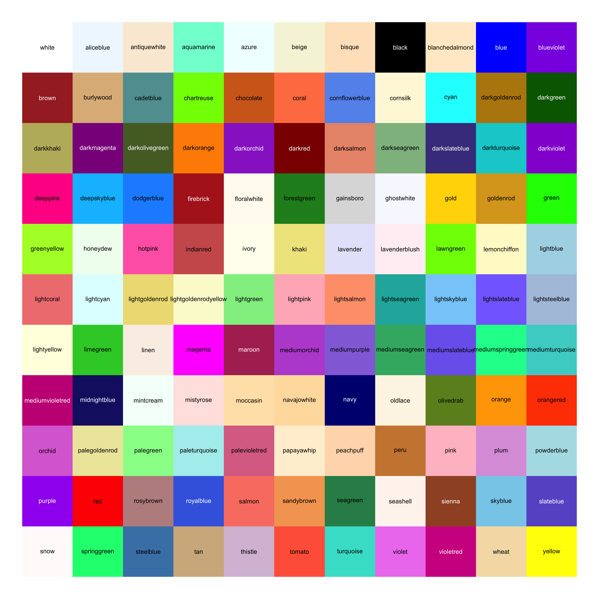

Creación y personalización de colores y paletas en R
6/3/2025
El uso del color es clave para comunicar, y el ecosistema de R tiene varios trucos convenientes para ayudarnos a usar el color de mejores formas.
En R, los colores se escriben como código, y a grandes rasgos pueden ser colores con nombre (por ejemplo, "purple"), colores hexadecimales (escritos como códigos de al menos 6 dígitos, como #FFFFFF), o como parte de funciones que producen paletas de colores.
A lo largo de este post usaremos la función swatch() del paquete {shades}, que genera un gráfico que presenta el color o la paleta de colores a partir de un vector de colores, lo que nos ayudará a visualizar nuestros colores más fácil. Una alternativa es la función show_col() de {scales}, que hace lo mismo.
library(shades)
library(scales)
Crear colores
La forma más básica de elegir un color en R es por su nombre. En R existen 657 colores con nombre. En la siguiente imagen puedes ver los principales:
Para usarlos, simplemente usa su nombre:
colores <- c("indianred", "steelblue", "grey60")
swatch(colores)
Casi todos estos colores pueden ser modificados agregando un número del 1 al 4 al final del nombre; por ejemplo, mediumorchid puede hacerse levemente más claro o más oscuro:
escala <- c("mediumorchid", "mediumorchid1", "mediumorchid2", "mediumorchid3", "mediumorchid4")
swatch(escala)
Los grises (gray) tienen la particularidad de que puedes ponerles un número entre 10 y 99 para ajustar su brillo:
escala <- c("gray10", "gray30", "gray50", "gray70", "gray90")
swatch(escala)

También puedes escribir un color definiendo su tonalidad (hue), saturación (saturation) y brillo (value) con hsv(), entendiendo que el matiz es la posición del color en la escala de todos los colores, que va del 0 al 1, empezando y terminando con el rojo:
color <- hsv(h = 0, s = 1, v = 1)
swatch(color)
Para guiarse, la siguiente gráfica muestra la tonalidad de colores entre 0 y 1,
Siguiendo el gráfico anterior, vemos que el tono 0.8 corresponde al color morado, así que podemos crearlo con hsv():
color <- hsv(0.85, 1, 1)
swatch(color)
Luego podemos modificar la saturación y brillo del color con los otros dos argumentos de hsv():
color <- hsv(0.82, 0.5, 0.4)
swatch(color)
Extender paletas de colores
Si tienes un vector de colores y necesitas alargarlo para tener más colores basados en la paleta original, puedes hacerlo con la función colorRampPalette(). Esta función crea otra función a partir de los colores, a la que luego le das el número de colores que necesites obtener a partir de la paleta original:
# paleta de 5 colores
paleta <- c("#f4b43f", "#ec6a2d", "#cc3b7b", "#705ce6", "#668cf6")
swatch(paleta)
# extender la paleta de 5 colores a 12 colores
colorRampPalette(paleta)(12) |> swatch()
También podemos usar esta función para crear con facilidad una paleta secuencial entre dos o más colores:
colores <- c("#df65b2", "#fae55f")
# extender la paleta a 8 colores
colorRampPalette(colores)(8) |> swatch()
Paletas de colores
Varios paquetes de R contienen sus propias paletas de colores prediseñadas. Uno de los conjuntos de paletas principales en visualización de datos, sobre todo para mapas, son las de
Color Brewer, a las que puedes acceder con el paquete {RColorBrewer}:
RColorBrewer::display.brewer.all()
Cuando elijas una de las paletas, puedes usarla
en cualquier gráfico de {ggplot2} con la función scale_color_brewer() o scale_fill_brewer(), según corresponda:
library(ggplot2)
iris |>
ggplot() +
aes(x = Sepal.Length, y = Sepal.Width, color = Species) +
geom_point(size = 4, alpha = 0.7) +
scale_color_brewer(palette = "PuRd") +
theme_classic()
Con el paquete {colorspace} también podemos ver otras paletas disponibles:
library(colorspace)
colorspace::hcl_palettes(plot = TRUE)
Usar estas paletas en {ggplot2} es tan fácil como agregar la función de escala apropiada para definir los colores del gráfico:
iris |>
ggplot() +
aes(Petal.Width, Sepal.Width, color = Sepal.Length) +
geom_point(size = 4, alpha = 0.7) +
colorspace::scale_color_continuous_sequential(palette = "Sunset") +
scale_y_continuous(expand = expansion(c(0, 0.1))) +
theme_classic()
Encuentro una lista que compila todas las paletas de colores de la comunidad de R en este repositorio.
Paletas secuenciales
Las paletas secuenciales consiste en un degradado entre dos o más colores. Suelen usarse para representar una variable continua o numérica, cuyo valor va cambiando de forma cuantitativa.
La función sequential_hcl() del paquete {colorspace} permite crear paletas secuenciales
colorspace::sequential_hcl(8, h = 300) |> swatch()
colorspace::sequential_hcl(8, h = c(300, 100)) |> swatch()
colorspace::sequential_hcl(5, h = 260,
c = c(45, 25), l = c(25, 85), power = .9) |> swatch()
También se pueden obtener vectores de colores a partir de las paletas existentes que vienen con el paquete {colorspace}:
colorspace::sequential_hcl(5, palette = "Red-Blue") |> swatch()
colorspace::sequential_hcl(5, palette = "Purple-Orange") |> swatch()
Paletas cualitativas
Como su nombre ética, en las paletas cualitativas los colores van saltando para maximizar la diferencia entre ellos. Se utilizan para variables cualitativas, categóricas o discretas, donde cada elemento de una secuencia es independiente de los demás, y el objetivo del uso del color es poder distinguirlos.
La función rainbow_hcl() de {colorspace} entrega una típica paleta de arcoíris, pero con la posibilidad de modificar sus atributos de color en sus argumentos, tales como las tonalidades (hue) de inicio o final, la intensidad (chroma) de los tonos
colorspace::rainbow_hcl(7, c = 70) |> swatch()
colorspace::rainbow_hcl(7, c = 100, start = 190, end = 380) |> swatch()

colorspace::rainbow_hcl(6, c = 60, l = 30, start = 230, end = 370) |> swatch()
Éste tipo de paletas usualmente reúne colores en una escala tipo arcoíris, o bien reúne colores temáticos, distintos entre ellos, pero armónicos entre sí.
También pueden usarse los nombres de las paredes preexistentes para generar una secuencia cualitativa con ellos.
colorspace::qualitative_hcl(6, palette = "Cold", c = 80) |> swatch()
colorspace::qualitative_hcl(6, palette = "Warm", c = 80) |> swatch()
Paletas divergentes
Las paletas divergentes se utilizan cuando una variable expresa a dos polos, una una misma magnitud donde los extremos son separados por una brecha central.
colorspace::diverging_hcl(n = 5, h = c(200, 300)) |> swatch()
colorspace::diverging_hcl(n = 7, h = c(700, 180)) |> swatch()
colorspace::diverging_hcl(n = 7, h = c(700, 180), c = 130, alpha = .7) |> swatch()
Modificar colores
Las funciones del paquete {shades} nos permitan obtener información detallada sobre cada uno de los colores, y usar esta misma información para modificarlos con mucho detalle.
Por ejemplo, definamos un color, y luego obtengamos el valor de su tonalidad. Recordemos que la tonalidad de los colores se expresan como grados entre 0° y 360°.
library(shades)
color <- "#f65b74"
swatch(color)
hue(color)
[1] 350.3226
Obtenemos que, para el color definido, el valor de su tonalidad es 350. Podemos usar esta información para modificar levemente el mismo color y así obtener una variable del mismo color levemente más anaranjada.
swatch(c(color, hue(color, 370)))
Podemos obtener mismos resultados utilizando el delta de la tonalidad del color; es decir, sumándole restándole una cantidad de grados a el valor de la tonalidad del color mismo:
swatch(c(color, hue(color, delta(50))))
Al usar la función delta(), lo que hacemos es pedirle que cambie la tonalidad del color en 50°, volviéndose en un tono amarillo.
Podemos obtener un resultado similar usando col_shift() del paquete {scales}:
library(scales)
show_col(c(color, col_shift(color, 20)))

El brillo (brighness) va de cero a uno, mientras que la claridad (lightness) va de cero a 100.
color |> brightness(0.7) |> swatch()
color |> lightness(delta(20)) |> swatch()
Con {scales}, la función col_lighter() realiza el mismo propósito:
col_lighter(color, 20) |> show_col()
Por su parte, la saturación aumenta la intensidad del color.
color |> saturation(delta(30)) |> swatch()
Podemos utilizar la función delta() para crear una sencilla paleta de colores a partir de un mismo color, aumentando y disminuyendo su intensidad (chroma):
swatch(
c(color |> chroma(delta(30)),
color,
color |> chroma(delta(-30)))
)
En {scales}, la función es col_saturate():
col_saturate(color, -50) |> show_col()
Podemos combinar estas técnicas para crear una paleta de colores más compleja, construida toda a partir de un solo color al cual se le va aumentando o disminuyendo sus valores de claridad e intensidad. El beneficio de hacerlo de esta manera es que luego basta con cambiar el color principal para obtener una paleta de iguales características, pero basada en una tonalidad distinta.
color_principal = "#4D4484"
color_fondo = color_principal |> lightness(13) |> chroma(20)
color_detalle = color_principal |> lightness(20) |> chroma(40)
color_destacado = color_principal |> lightness(50) |> chroma(65)
color_texto = color_principal |> lightness(80)
swatch(c(color_principal,
color_fondo,
color_detalle,
color_destacado,
color_texto))
color_principal = "#3170ac"
color_fondo = color_principal |> lightness(13) |> chroma(20)
color_detalle = color_principal |> lightness(20) |> chroma(40)
color_destacado = color_principal |> lightness(50) |> chroma(65)
color_texto = color_principal |> lightness(80)
swatch(c(color_principal,
color_fondo,
color_detalle,
color_destacado,
color_texto))
Notar que el código es igual, y sólo se cambió el valor del color_principal. Esta estrategia es muy útil si se están produciendo visualizaciones o aplicaciones que ocupan una paleta de colores monocroma.
Mezclar colores
Las funciones submix() y addmix() del paquete {shades} facilitan el mezclado de colores sustraje ctivo y aditivo, respectivamente. A partir de dos colores, entrega la mezcla de ellos, abriendo muchas posibilidades para la experimentación y creación de nuevos colores:
swatch(c("#70f1d5",
submix("#70f1d5", "#fae55f"),
"#fae55f"))
swatch(c("#3377f7",
addmix("#3377f7", "#ec4e3c"),
"#ec4e3c"))

swatch(c("#f9ce45",
submix("#f9ce45", "#77d671", amount = 0.5),
"#77d671"))
El paquete {scales} también provee una función para mezclar colores. Se puede usar esta función para tomar una paleta de colores y volverla más coherente al aplicarle una pequeña fracción de otro color, en este caso naranja:
col_mix(a = c("#77d671", "#70f1d5", "#fae55f", "#ff479c"),
b = "orange2",
amount = 0.2) |> show_col()
Usar paletas de colores en {ggplot2}
Muchas de estos paquetes incorporan funciones de escalas de colores (scale_color_x(), scale_fill_x()) para aplicar una paleta de color fácilmente a un gráfico creado {ggplot2}.
library(ggplot2)
library(dplyr)
iris |>
ggplot() +
geom_bar(aes(Petal.Width, fill = Species)) +
colorspace::scale_fill_discrete_qualitative(palette = "Dark 3") +
scale_y_continuous(expand = expansion(c(0, 0.1))) +
theme_classic()
iris |>
ggplot() +
geom_point(aes(Sepal.Width, Sepal.Length, color = Petal.Width, size = Petal.Length), alpha = .8) +
colorspace::scale_color_continuous_sequential(palette = "Sunset", na.value = "white") +
theme_classic() +
guides(size = guide_legend(override.aes = list(color = "#784FA1")),
color = guide_colorsteps()) +
theme(legend.title = element_blank(),
axis.title = element_blank())

iris |>
ggplot() +
geom_point(aes(Petal.Length, Sepal.Width, color = Petal.Width, size = Sepal.Length), alpha = .8) +
viridis::scale_colour_viridis("viridis", na.value = "white") +
theme_classic() +
guides(size = guide_legend(override.aes = list(color = "#88D181")),
color = guide_colorsteps()) +
theme(legend.title = element_blank(),
axis.title = element_blank())
Algunas de las funciones para aplicar paletas de colores tienen funcionalidades extras. Por ejemplo, las funciones de {colorspace} permiten modificar sus paletas en términos de la saturación (chroma) y el brillo del color (luminance), entregándote más libertad al momento de definir una apariencia específica:
grafico <- iris |>
ggplot() +
geom_point(aes(Sepal.Width, Sepal.Length, color = Petal.Width), size = 3, alpha = .8) +
theme_classic() +
guides(color = guide_colorsteps()) +
theme(legend.title = element_blank(),
axis.title = element_blank())
grafico +
colorspace::scale_color_continuous_sequential(
palette = "TealGrn",
c1 = 50, # intensidad del color
l1 = 60) # brillo del color
grafico +
colorspace::scale_color_continuous_sequential(
palette = "TealGrn",
c1 = 20, # intensidad del color
l1 = 30) # brillo del color
{ggplot2}, puedes revisar
este tutorial sobre visualización de datos desde cero!
Avanzado
{colorspace} incluye funciones para poder visualizar secuencias de colores en proyecciones del espacio de color HCL (hue, chroma, luminance), lo que nos permite contextualizar las paletas en un espacio perceptual del color basado en estos tres parámetros.
colorspace::hclplot(sequential_hcl(7, h = 260, c = 80, l = c(35, 95), power = 1.5))
colorspace::hclplot(sequential_hcl(7, h = c(260, 220), c = c(50, 75, 0), l = c(30, 95), power = 1))
Fuentes y recursos
- https://github.com/EmilHvitfeldt/r-color-palettes
- https://r-graph-gallery.com/ggplot2-color.html
- https://www.datanovia.com/en/blog/top-r-color-palettes-to-know-for-great-data-visualization/
- https://jbengler.github.io/tidyplots/articles/Color-schemes.html
- Fecha de publicación:
- March 6, 2025
- Extensión:
- 9 minute read, 1858 words